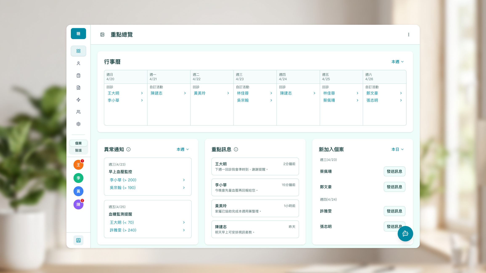
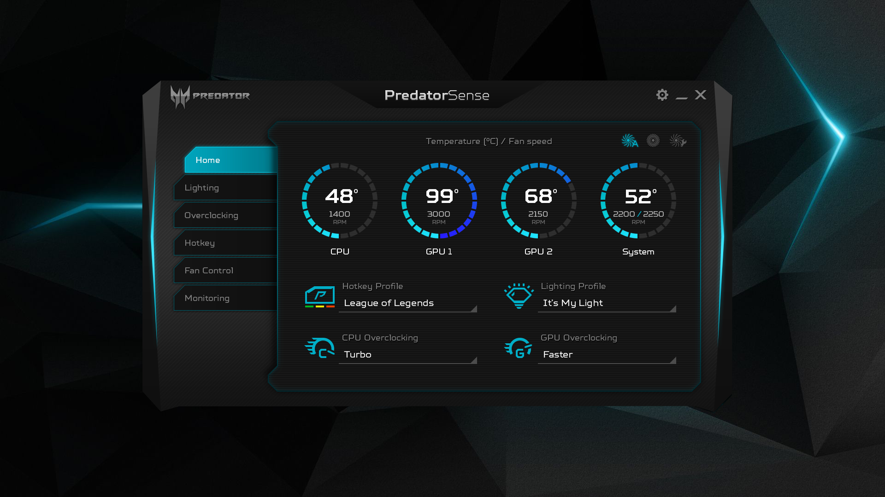
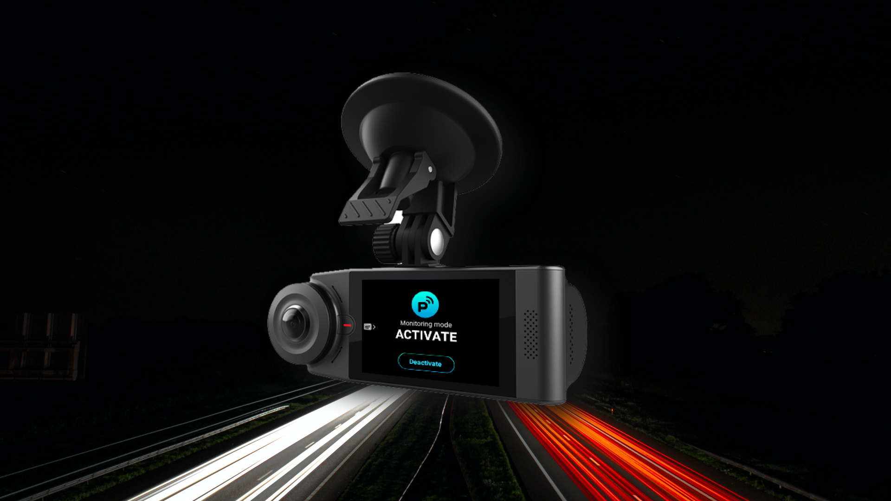

設計案例
展示在不同產業、複雜需求中解決問題的能力

查看案例
2025 ~ now
智慧醫療個案管理平台
將慢性病管理機制自動化，讓個管師能夠專注於照護。
醫療
SaaS
顯著降低醫護負擔

查看案例
2022 ~ now
校園疫苗接種數位轉型
為疾管署開發全國性的校園疫苗接種管理系統，從紙本到雲端，打造智慧校園健康管理。
政府
醫療資訊系統
300萬+使用者
90% 滿意度

查看案例
2018 ~ 2020
PredatorSense 遊戲控制中心
為電競玩家打造的強大系統管理工具。
桌面應用程式
軟硬整合
iF Design Award

查看案例
2017
Vision360 雲端行車紀錄器
360 度無死角的行車安全守護者。
消費電子
IoT
新創產品
iF Design Award
設計方法論
以研究為基底，從業務目標出發，確保設計決策有據可依
01
深入發掘問題與需求
實地訪談、業務流程分析、使用者觀察。了解真實痛點而非表面需求，確保設計方向解決正確問題。
02
整體性產品規劃與設計
資訊架構規劃、流程簡化、元件系統建立。在複雜業務邏輯中找出最低認知負擔的操作路徑。
03
持續驗證優化
使用者測試、數據追蹤、持續迭代。以實際使用反饋驗證設計假設，將觀察轉化為可衡量的改善成果。
關於我
工作經歷
Assistant Manager
DeepQ · 2020年6月至今
資深設計師
Acer · 2014年9月 — 2020年6月
核心能力
需求分析
系統性規劃
AI協同設計
自動化設計稿生成
Figma
Claude Code
個人特質
善於聆聽與理解
善於洞察用戶真實需求，從細微處發現問題本質。能夠透過深入觀察用戶行為，發掘潛在需求，並轉化為有效的設計解決方案。
注重有效溝通
從客戶角度出發，能與各利益相關者建立共識。能夠清楚傳達設計理念，並有效整合各方意見，推動專案順利進行。
樂於與團隊合作
以團隊整體利益為考量，尋求多方共贏的解決方案。注重團隊協作，共同創造最佳成果。
主動持續學習
主動追求進步，善於分析問題並制定改善計劃。面對挑戰時，能夠快速學習新技能，持續提升專業能力。